What
We’ve had a fascinating visit to the Signal Tower at the Nürnberg main train station. The Nürnberg train station, due to its location in Europe, is one of the most frequented train stations. It has three different generations of railroad signalling systems from relay-based electro-mechanical to fully digital.
I’ve collected what I recall from memory with images found on various pages across the internet.
Contents
Contents
When
Guided Tour
The employees at the signal tower offered a guided tour at an open-door event, the “Lange Nacht der Wissenschaften 2023”, and showed visitors the intricate details of railroad signaling.
Why
Nürnberg Train Station
In this stitched together satellite image of the Nürnberg train station you can see the 22 railroad tracks of this gigantic train station. The train station is 16th on the list of largest train stations purely by track count [1]. The largest being Gare du Nord in Paris with 32 tracks.
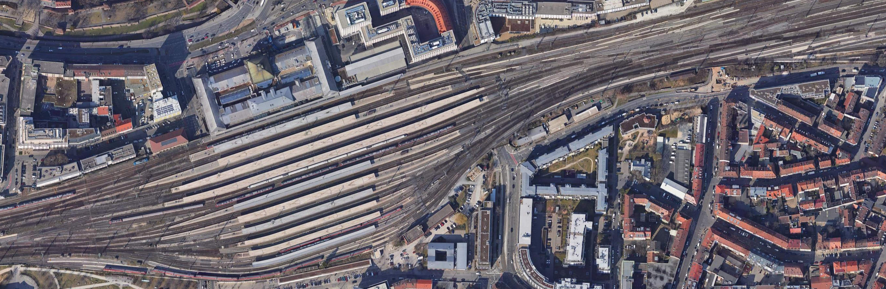
How
Sections
In railroad switching systems the tracks leading to and from a train station are commonly separeted into “sections”. Each section is only allowed to contain one train at any given time. This prevents collissions.
The purpose of a railroad switching system is to ensure that that is always the case and to make sure the trains can move from any track to any other track.
Railroad Switches
At the track the “railroad switches” [2] make it possible to steer a train into one section or another. They do this by moving a portion of the track, at an intersection, to either the one or the other side.
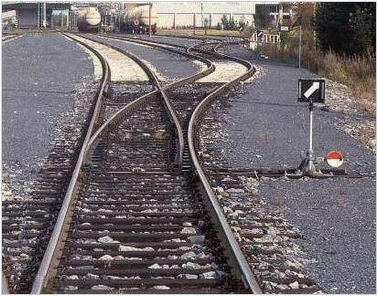
(Railroad Switch, Image from Wikipedia [3])
Line-of-Sight Control
In the early days of railroads these railroads switches were manually operated by line-of-sight by the operator in the switch tower. An operator in the switching tower would show a signal that an employee directly at the railroad switch would then apply.
Mechanical Control
The next stage in the evolution of railroad switches were still mechanically controlled, but centrally from the switching tower. This allows a single operator to control the switches without having to go outside. To do this the operator manually pulls levers.
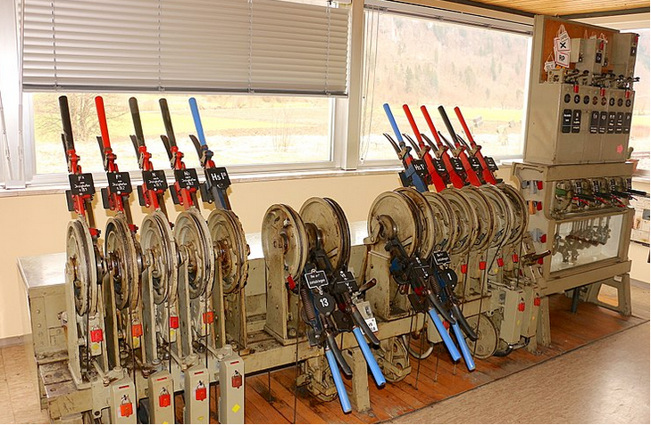
(Centralized mechanical Railroad Switch, Image from Wikipedia [3])
Motorized Control
Nowadays modern railroad switches are fully motorized. They contain a geared motor or a pneumatic cylinder to move the track.
These motorized actuactors often also contain heating elements, to keep the tracks at 9 Degrees Celsius to prevent them from freezing in place.
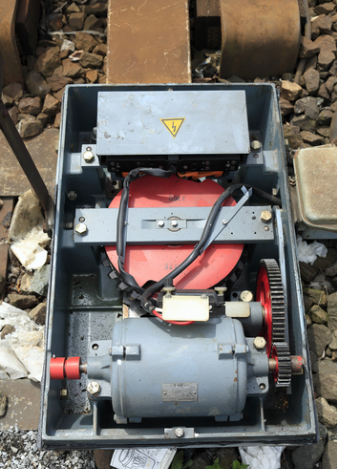
(Motorized Railroad Switch, Siemens “Schnellläuferantrieb” S700, Image from Wikipedia [3])
Automation
With motorized control of the railroad switches it became possible to control the railroad switches by electro-mechanical relay-based systems. With the programming being in the wiring. This is very similar to early computers.
The Nürnberg train station still operates such a relay-based system, the Siemens Sp-Dr-S-60. During the guided tour they showed us that this system takes up two stories in the switch tower building.
Scale
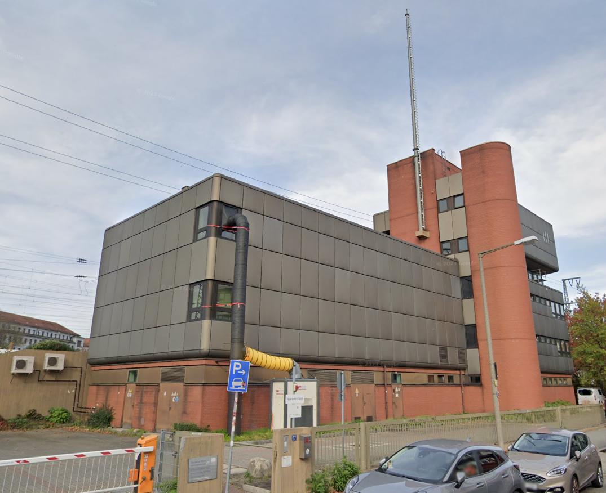
(image of the switch tower building, taken from Google StreetView)
As far as we could tell the building is entirely for the railroad switching system. Two stories are for the relay based system, there is air conditioning, a diesel/heating oil power generator, a control room, some offices and workshops.
They run approx. 800 trains and 1000 shunting trips over the system at a max per-train speed of 80 km/h. 60% of all of Deutsche Bahn’s railroad switching systems are currently relay-based [7]. If I recall correctly there are a couple thousand of relay-boxes that cost 30.000 Eur per piece.
There are shifts around the clock with one shift handling mostly passenger traffic during the day and another shift handling mostly freight traffic during the night. We were told that the busiest time is between 17 and 22 o’clock.
Relay-Based System
The relay-based system of the oldest of the three switching systems takes up two stories of the building. It consists of many relay boxes similar to the image taken from a different train station below.
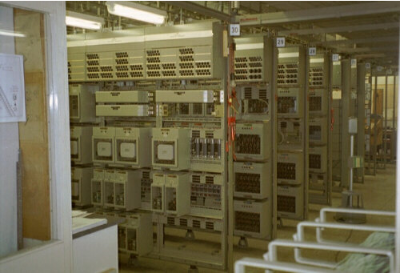
(image of a Siemens Sp Dr S60 relay room, at a different location, taken from [11])
Nobody could tell us the total power consumption, but one can guess by the 230 kVA Diesel Ship-Motor for emergency power generation they have on the ground floor.
Track Diagram
Five stories up is the control room with track diagram (ger.: “Gleisbild”). An image of the track diagram from Nürnberg train station is shown below.
Note that three different generations of railroad switching systems are controlled from this room.
The track diagram is the central point of control for Siemens relay-based railroad control systems. In spans roughly 7 km in each direction with the train station located in the center.
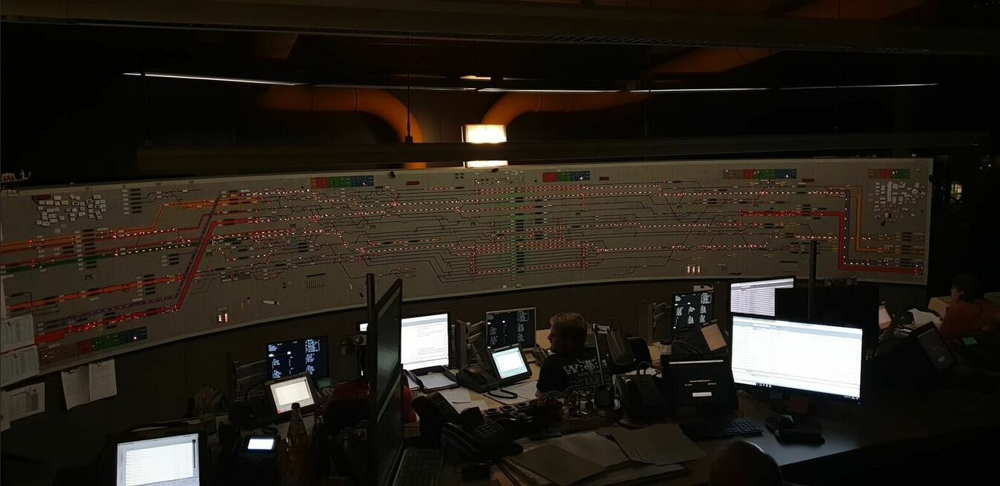
(Track Diagram from Nürnberg Hbf, Image from stellwerke.info [10])
These are very similar across Germany. A close up of the track diagram of Wiesbaden Hbf looks like this:
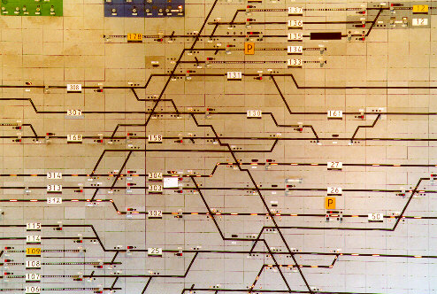
(Track Diagram from Wiesbaden Hbf, Image from stellwerke.de [4])
In Nürnberg the tracks 9 and 10 have no platform, but in the track diagram there are tracks. These two tracks are for trains that pass-through without stopping, so primarily for freight trains.
It’s not a track 9 3/4 situation where you can run into a wall and wind up on a secret platform to Hogwarts, so it’S best you don’t attempt to run into the wall.
In order for any train to be able to move one track to any other track there are diagonal paths. The railroad switching system can automatically switch all railroad switches for a given path that the operator enteres into the system.
Digitalisation
Semiconductor technology is slowly making it into railway systems. Currently there is an “if it ain’t broke, don’t fix it” mentality of the German railroad company and the temendous cost, support contracts and security certifications are keeping the relay-based systems in action to this date.
We were shown a modern digital railroad switching system (ger.: “ESTW”=”elektronisches Stellwerk”). The employee opened the door of a server rack. Inside a single server (probably 2U (height units) = 8.9cm x 43cm x 38cm (Height x Width x Depth)) server. The rack next to it is filled with electronic control modules to apply the electronic signaling.
Such a server and additional rack-mount cabinet can probably replace two entire stories of relay boxes in the switch tower building.
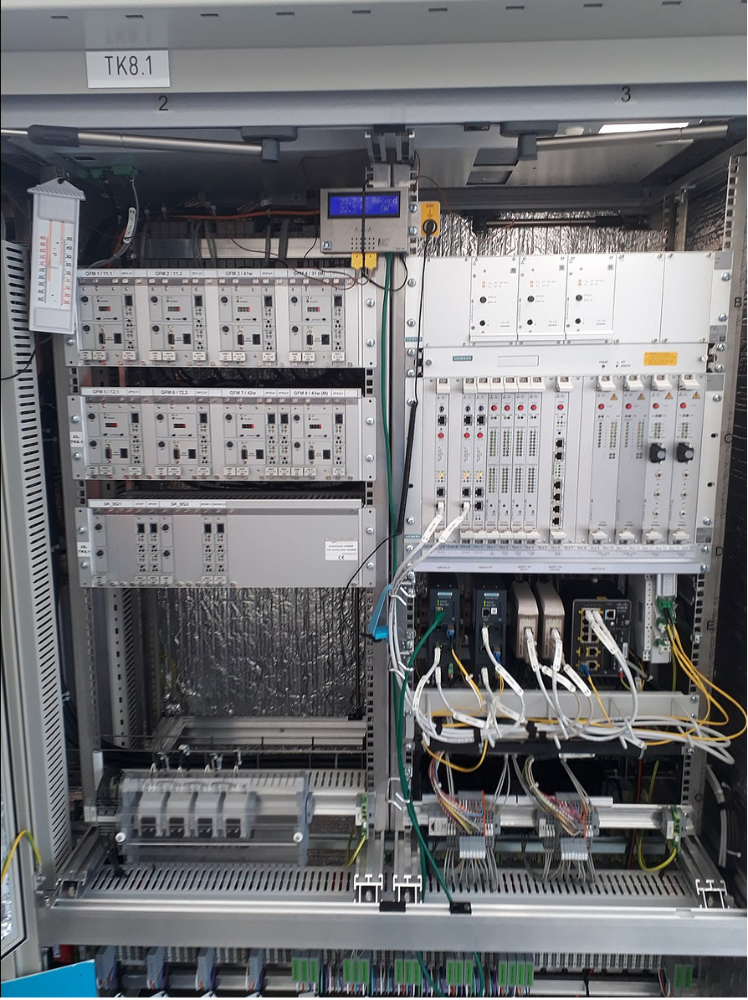
(Siemens “Simis IS” digital railroad switching system, image taken from [5])
The track diagram in such a digital system is shown on standard computer monitors with the operator sitting at a desk.
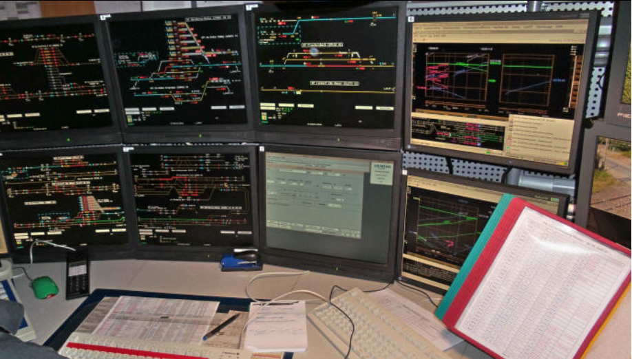
(control panel of a digital railroad switching system, image taken from [6])
Safety
We were also shown some safety measures. The “Punktförmige Zugbeeinflussung (PZB)” is an electro-magnet with an electric coil that can emit a signal at varying frequencies.
500, 1000 und 2000 Hz signals are used [12] that cause the trains to either slow-down or emergency break. Normally the train driver would adhere to the signs, but in case he passes accidentally passes a signal the PZB will slow or stop the train.
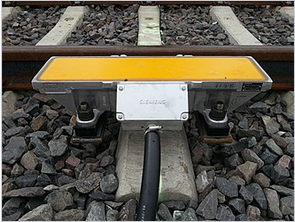
(Siemens “Punktförmige Zugbeeinflussung (PZB)” , image taken from [12])
Simulation
For hobbyists, simulation and also employee training there are a number of railroad switching simulators [8,9].
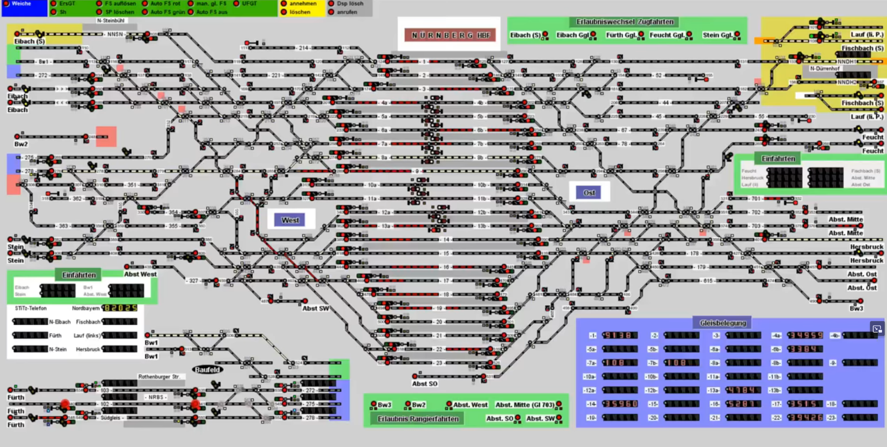
(Railroad Switching Simulator showing Nürnberg train station, image taken from [12])
Running StellwerkSim on Linux
In order to run the Simulator on Linux you’ll need the official Java from Oracle
jre-8u391-linux-x64.tar.gz
Extract that and set the paths
sudo update-alternatives --install /usr/bin/java java <pathToExtractedArchive>/jre1.8.0_391/bin/java 100
sudo update-alternatives --install /usr/bin/javaws javaws <pathToExtractedArchive>/jre1.8.0_391/bin/javaws 100
and then set the Java-Version via update-alternatives
sudo update-alternatives --config java
sudo update-alternatives --config javaws
You then need to register an account at “stellwerksim.de” you can download the *.jnlp-file from “https://www.stellwerksim.de/download.php” and run it by
javaws sts-coder.jnlp
That will open the “StellwerkSim Kommunikator”. In order to enter the simulation you select the train station unter “Stellwerke” on the Webpage.
I suggest to start with Haßfurt as it’s the smallest and easiest train station I could find.
https://www.stellwerksim.de/anlagen.php#stellwerk=867
On the webpackge click on “detaillierte Startauswahl” on the right, with the Java-Application running, and select a time at the bottom of the page by clicking on e.g. “Spielzeit xx:xx Uhr” That will load bring the simulation up via the “StellwerkSim Kommunikator” Java-Application
It should look like this:
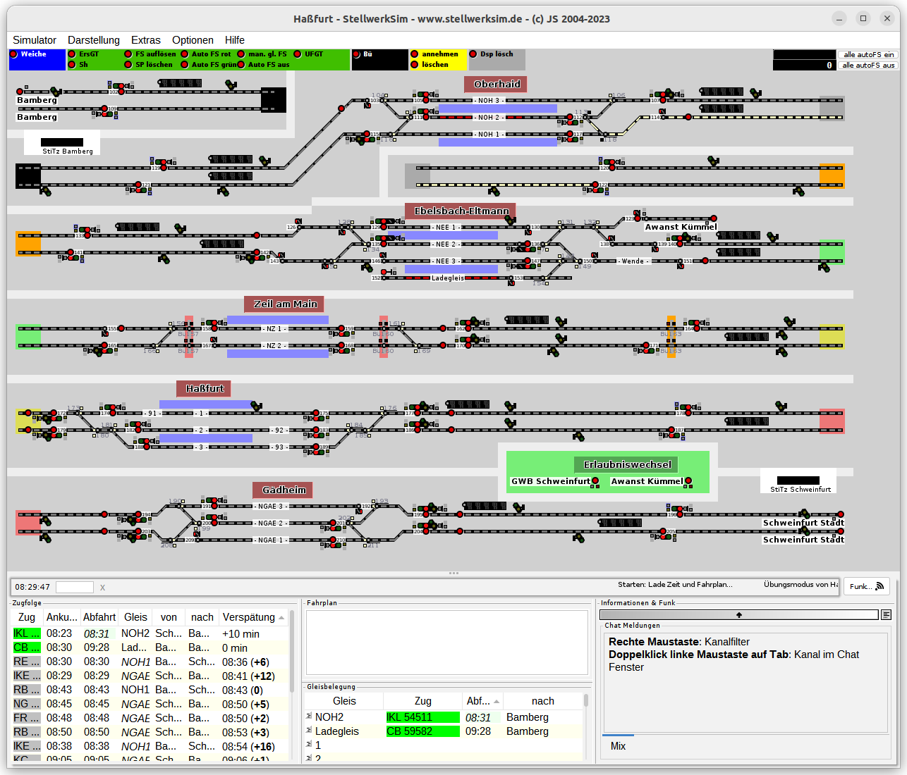
(StellwerkSim simulating the Haßfurt train station)
Regarding the interface:
- in the top is the track diagram
- the coloured boxes on the left and right are continuations. So for instance the right green box is connected to the left greenbox one row below.
- on the bottom left is the train schedule
- tracks are grey lines
- trains are indicated by the red lines
- white lines indicate a path way a train will travel on
- you control a path way by clicking on the red dots in sequence. Once as path is set, it will be coloured white.
- that will automatically switch the signals to green.
- the number displays indicate the number of the train in that track section
- on the bottom right of the window are the radio communications. It will light up, when trains are blocked and train drivers phone in to complain about it.
Progress
We’ve seen and learned a lot during the guided tour through the signal tower at the Nürnberg train station.
I’m keen on seeing more semi-conductor technology being rolled out at signal towers through-out the country and the the deprecated hardware we might be able to score on online auction houses.
1] https://en.wikipedia.org/wiki/List_of_busiest_railway_stations_in_Europe 2] https://en.wikipedia.org/wiki/Railroad_switch 3] https://de.wikipedia.org/wiki/Weiche_%28Bahn%29 4] http://www.stellwerke.de/formen/seite2_m.html 5] https://de.wikipedia.org/wiki/Elektronisches_Stellwerk 6] https://de.wikipedia.org/wiki/Elektronisches_Stellwerk 7] https://de.wikipedia.org/wiki/Relaisstellwerk#cite_note-sd-99-6-13-2 8] https://www.estwsim.de/cms/index.php/14-www/122-version-3-5-nuernberg-rbf-einfahrt 9] https://www.stellwerksim.de/info.php 10] https://stellwerke.info/stw/stw.php?id=4051 11] http://www.stellwerke.de/formen/siem_rel.html 12] https://de.wikipedia.org/wiki/Punktf%C3%B6rmige_Zugbeeinflussung 13] https://www.stellwerksim.de/